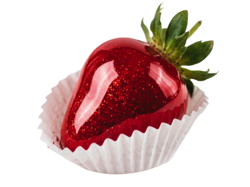
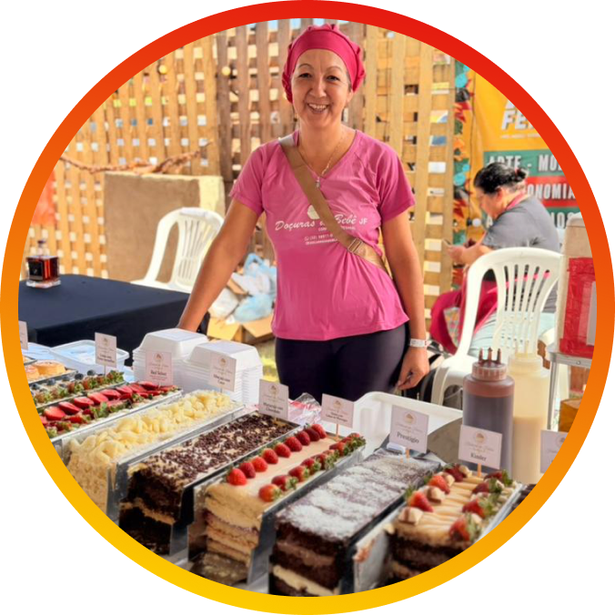
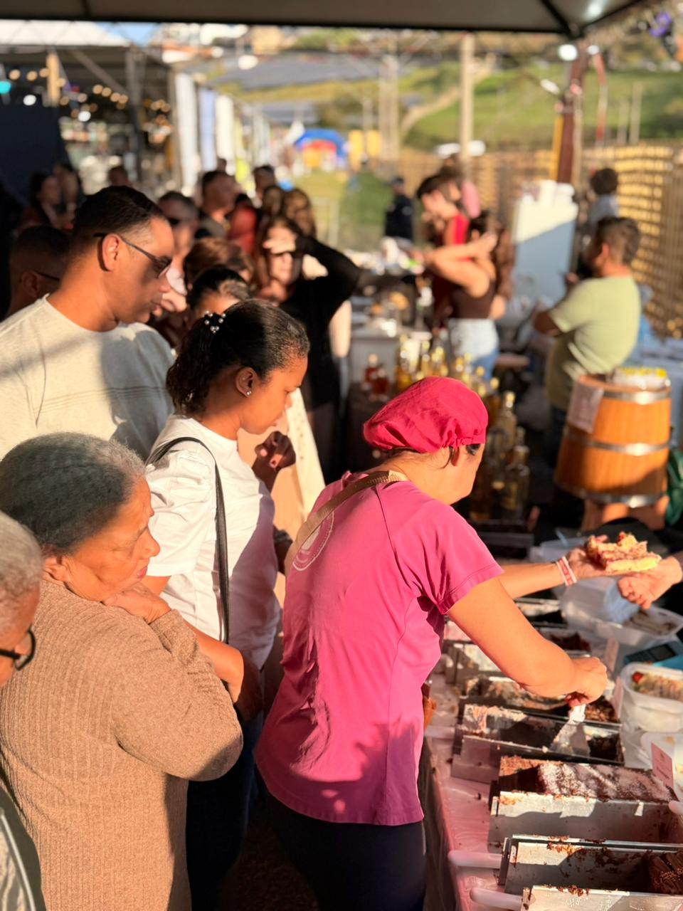
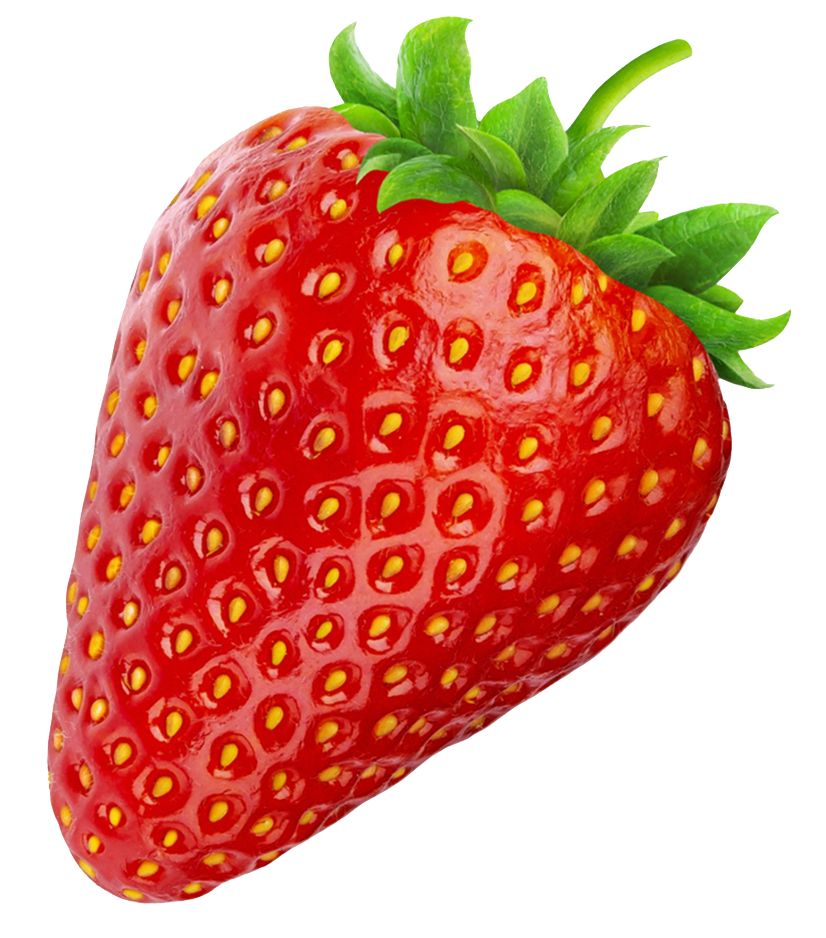
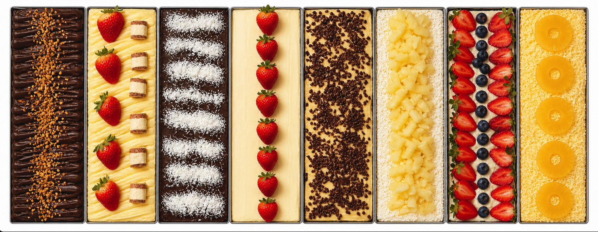

Todo hype VALE A PENA?
Antes de comprar ingredientes para o próximo produto viral, responda a estas quatro perguntas
Toda semana, um produto ganha espaço nas redes sociais e movimenta o mercado de alimentação. O morango do amor, o x-bolo, o Dubai chocolate e os festivais de fatias mostram como vídeos curtos, imagens atraentes e filas diante das lojas despertam curiosidade e aceleram o consumo.
A visibilidade cria uma sensação de urgência e convida o empreendedor a agir rapidamente. O potencial de vendas cresce quando a tendência encontra uma operação preparada, uma margem saudável e um produto alinhado ao público. Esses critérios transformam o entusiasmo das redes em uma decisão de negócio.
Da curiosidade à decisão
Segundo Omero Galdino, especialista em Gestão Empresarial do Sebrae Pernambuco, o ponto de partida está na relação entre o produto, o cliente e a capacidade da empresa. O produto precisa resolver uma necessidade do cliente, e a operação deve atender à demanda preservando a qualidade, explica o especialista.
A análise reúne quatro aspectos centrais: capacidade de produção, giro do estoque, margem de lucro e padrão de qualidade. Juntos, eles indicam o volume adequado para o primeiro teste e ajudam a dimensionar equipe, ingredientes, equipamentos, embalagens e tempo de preparo.
O cálculo também inclui transporte, energia, gás, taxas do evento e demais custos indiretos. Com essa visão completa, o empreendedor consegue estabelecer um preço coerente, estimar o retorno e escolher o ritmo de crescimento.

Antes de seguir uma tendência, pergunte-se:
- Tenho capacidade para produzir
esse volume? - Consigo vender tudo como planejado?
- Meu lucro continuará saudável?
- Vou conseguir manter a qualidade se as vendas dobrarem?

Da curiosidade à decisão
Esse cuidado orientou a confeiteira Patrícia Rabelo. A confeitaria surgiu como uma forma de aliviar o estresse e tornou-se sua principal atividade em 2017. Há cerca de três meses, ela decidiu participar pela primeira vez de um Festival de Fatias e escolheu um volume compatível com sua estrutura. “Levei apenas 150 fatias”, conta.
A experiência permitiu observar a procura, acompanhar a aceitação dos sabores e entender o ritmo do evento. A partir desse resultado, Patrícia ampliou a produção gradualmente. Hoje, participa de festivais todas as semanas, prepara cerca de 30 tortas por evento e adaptou três cômodos da própria casa para acomodar a nova rotina.
A qualidade continua orientando cada etapa. O volume acompanha a capacidade da equipe e da estrutura, enquanto o padrão dos produtos sustenta a confiança conquistada junto aos clientes.



O trabalho que sustenta a vitrine
As redes sociais destacam o produto pronto, a decoração e o movimento das vendas. A operação que sustenta essa vitrine começa muito antes do evento. Patrícia aponta o domínio das técnicas de produção como base do processo, com atenção a congelamento, conservação, fermentação e segurança dos alimentos.
O planejamento organiza compras, preparo, congelamento e montagem. A escolha dos ingredientes considera a oferta em cada região e o impacto dos insumos na margem. Sabores ligados à identidade da marca também aumentam o valor percebido e favorecem o reconhecimento do trabalho.
O evento funciona ainda como uma porta de entrada para novos relacionamentos. Cartões, redes sociais atualizadas e canais de contato ajudam a aproximar os visitantes da marca. Depois de cada edição, vendas, custos, margem e retorno dos clientes oferecem referências para o próximo passo.
O alcance das redes
-
74% dos brasileiros descobrem novos produtos pelas redes sociais.
(EY Future Consumer Index)
-
Mais de 70% dos consumidores afirmam que vídeos curtos influenciam decisões de compra, especialmente na categoria de alimentos e bebidas.
(TikTok Marketing Science/Kantar)
-
O Brasil possui mais de 144 milhões de usuários ativos nas redes sociais, tornando-se um dos maiores mercados para conteúdo gastronômico do mundo.
(DataReportal 2025)
Quando a tendência ganha continuidade
Em poucos meses, os festivais mudaram o centro da operação de Patrícia. Ela encerrou as vendas pelo aplicativo de delivery, e o faturamento de um único fim de semana de eventos passou a superar o valor que costumava alcançar em um mês inteiro na plataforma.
O crescimento também trouxe um público diferente. “Antes eu vendia mais sobremesas pequenas para jovens. Hoje, a idade média subiu e as pessoas que experimentam uma fatia voltam e passam a acompanhar meu trabalho”, afirma. A relação construída durante os festivais amplia as chances de recorrência e mantém a marca presente na rotina desses consumidores.

Reputação para além da tendência
Para Omero Galdino, existe um erro que se repete sempre que um produto viraliza: as pessoas investem primeiro e validam depois. "O melhor caminho é testar. Vender em pequena escala, ouvir os clientes, ajustar o produto e só então pensar em crescer," comenta.
Patrícia acredita exatamente na mesma lógica e aconselha quem está começando: "não se compare com quem já está há anos no mercado. Faça o melhor dentro da sua realidade".